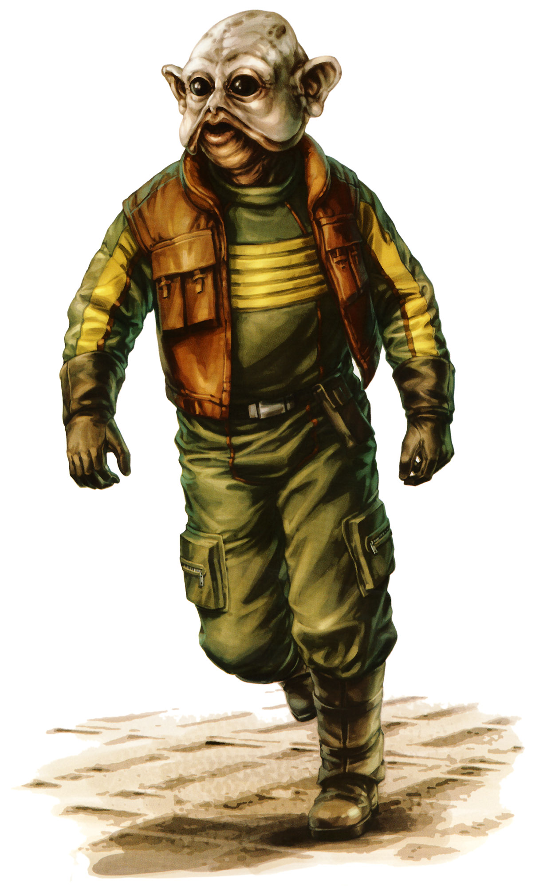

Sullustan
sullustan
Special Abilities: Sullustans begin with 1 rank in Astrogation; they may not train this skill above rank 2 at character creation. They also start with one rank in the Skilled Jockey talent.
Bom underground but with a yearning for the stars, most Sullustans find their way into space as pilots and astrogators. Affable, curious, and free-spirited, Sullustans are not fond of the Empire, and even less fond of the fact that the corporatocracy that runs their government from the offices of SoroSuub has sold their entire planet to the Imperial war machine.
Despite their very distinctive features, Sullustans are genetically near-humans. Their skin is generally pink in tone, with very little body hair. Their height tends to fall within 1.0 to 1.8 meters. They have large, dark eyes; large, rounded ears; and notable flaps of skin that extend down from their cheeks and are called "dewflaps."
Evolving on a volcanic planet with a thoroughly inhospitable surface, the Sullustans became subterranean beings who thrived in the caves and tunnels beneath Sullust's unstable outer crust. Their adaptations give them exceptional hearing, including the ability to determine distances and directions via audio cues. Their eyes are such that they can see up to twenty meters even in total darkness. Unfortunately, this means most Sullustans start to suffer serious corneal damage when exposed to natural light over extended periods of time.
Another evolutionary adaptation enables all Sullustans to always know what direction they are going, regardless of conditions or lack of physical signs. This ability allows the species to navigate the complex warrens and tunnel networks they live in. For reasons not yet fully understood, this natural direction sense in any situation extends all the way to space travel, even including hyperspace navigation.
Sullustans have a very clan-oriented culture, in which a single female has many male mates, and the group lives together and raises the children. Females grow to a certain maturity, after which they go on to find their own group of males with which to start another family group (called a "warren-clan"). The Sullustans have a polytheistic religion, and they revere death as the "Eternal Sleep." They maintain massive and elaborate vaults as holy sites, which are quite beautiful.
Though most Sullustans stay close to home, those seeking adventure and new experiences found themselves able to parlay their natural sense of direction into lucrative jobs as spacers throughout the galaxy. These spacers learned a great deal, especially about technology and manufacturing, which they brought home with them to share with their people. Eventually, the extremely lucrative mining found on Sullust and its moons financed a huge boom in the Sullustese economy, which came to be dominated by the highly diversified SoroSuub Corporation. Employing over half the population, SoroSuub ultimately engineered circumstances allowing it to take over the government of the planet; at first, this was behind the scenes, but with the rise of the Empire, it became a legal fact as well.
Sullustans are naturally friendly and outgoing, enjoying practical jokes as a way to see how others react. They are inherently curious, and many consider them reckless. They have a profound desire to experience the galaxy directly, in every way they can.
The unstable, inhospitable surface of Sullust conceals an elaborate and amazing culture below it. The sky is often blacked out by massive clouds of volcanic ash, yet the Sullustans know exactly where to place their homes and their cities to avoid the dangers of the planet.
Many spacers, and especially smugglers, know the flowing language of Sullustese, so ubiquitous have Sullustans been on the hyperspace lanes across the galaxy.
The Sullustan Resistance, which opposes SoroSuub for control of Sullust, is growing closer to direct opposition against the Empire itself. Not surprisingly, more and more Sullustans are joining the Alliance, ready to apply their gifts and their courage to overthrowing the Empire. The Ace career is a perfect path for many Sullustans, though their natural dexterity makes them excellent Soldiers and their sensory gifts work well for the Spy career. Most Duties apply perfectly well for Sullustans.